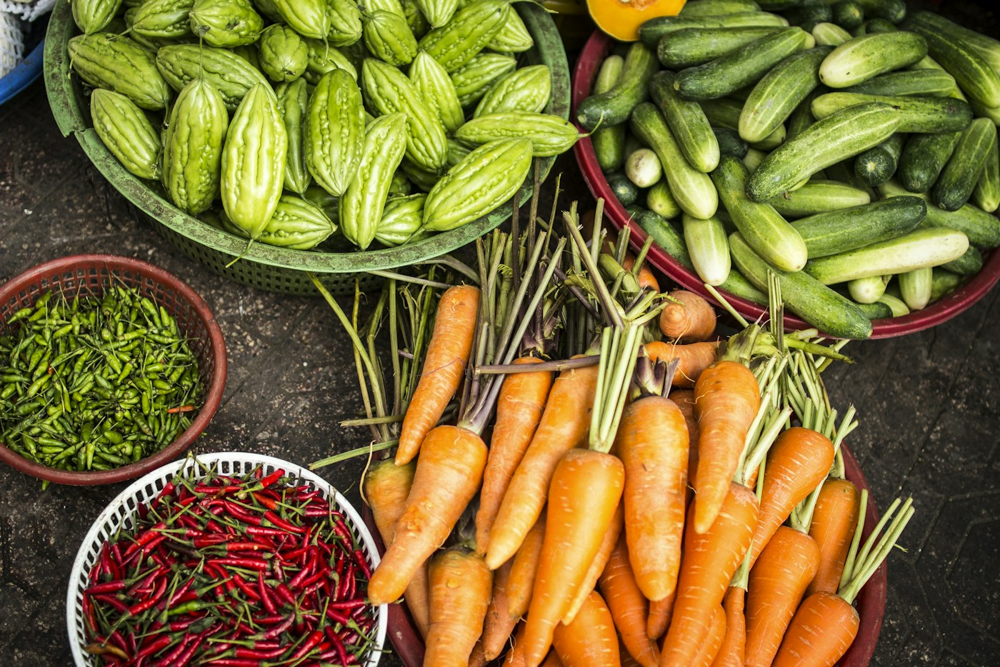

Project implementation
Field implementation, farmer mobilisation, training, monitoring, data collection and reporting for agricultural, environmental and community projects.
EnquireAgriculture · climate · community
Humi 99 implements agricultural, land restoration and climate-smart projects while developing practical technologies and services for farmers and communities.
Humi 99 Agri Solutions is an agricultural and climate solutions company working alongside partners, farmers and communities.
From project delivery and agricultural services to practical technology, we bring field experience to the challenges shaping resilient communities.
Get to know our approachPractical delivery across agriculture, restoration and innovation.
Field implementation, farmer mobilisation, training, monitoring, data collection and reporting for agricultural, environmental and community projects.
EnquireSoil testing, land-use planning, agroforestry, tree establishment, farm establishment, advisory and field services.
EnquirePractical tools and approaches, including the Humi 99 Earth Auger, mechanisation and digital agriculture.
ExploreLand restoration, climate-smart agriculture, organic waste management and circular economy initiatives.
EnquireProject stories, field photographs and partner details will be added here as they are approved for publication.

Illustrative agricultural photography, not Humi 99 project evidence. Approved case studies appear below.
Case studies are being prepared by the Humi 99 team.
Tools for practical progress
A featured Humi 99 solution designed to support practical agricultural and field work. Product applications, specifications, performance details and real-use photography will be added by the team.
Request a serviceOnly verified figures will be published. Add approved values and their last-updated date in the CMS.
Approved partner and client names and logos will be added here.
Approved partner logos will appear here.
Updates, field stories and insights will be shared here.
Field stories and updates will be shared here.
Tell us what you are working on. The Humi 99 team will help you find the right next step.
This GitHub Pages copy is a presentation preview. Use the live website to send an enquiry.